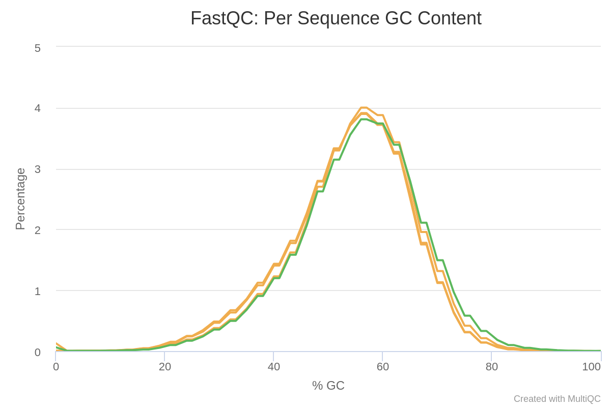
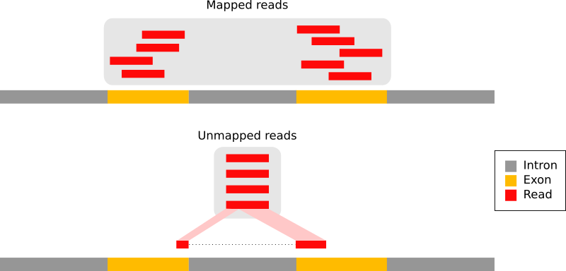

Before we start log into your Galaxy account you used in the previous lab. A word of warning, in this laboratory you'll be using that largest data sets you'll be dealing with in this course. This means that you might experience extended wait times while waiting for the analysis to finish on Galaxy. Plan accordingly, and be patient.
Introduction
RNA sequencing (in short RNA-Seq) has become a very widely used technology to analyze the continuously changing cellular transcriptome (i.e. the set of all RNA molecules in one cell or a population of cells). One of the most common aims of RNA-Seq is the profiling of gene expression
by identifying genes or molecular pathways that are differentially
expressed (DE) between two or more biological conditions. In this lab you'll be counting the number of reads that map to individual genes, a basic step (but only one step) in an RNA-Seq analysis. In the next lab you'll learn to put those counts to use to estimate levels of gene expression.
In the study of Brooks et al. 2011, the authors identified genes and pathways regulated by the Pasilla gene (the Drosophila homolog of the mammalian splicing regulators Nova-1 and Nova-2 proteins) using RNA-Seq data. They depleted the Pasilla (PS) gene in Drosophila melanogaster by RNA interference (RNAi). Total RNA was then isolated and used to prepare both single-end and paired-end RNA-Seq libraries for treated (PS depleted) and untreated samples. These libraries were sequenced to obtain RNA-Seq reads for each sample. The RNA-Seq data for the treated and the untreated samples can be compared to identify the effects of Pasilla gene depletion on gene expression.
In this tutorial, we will use just two the datasets from the Brooks et al. 2011 study:
1 treated sample (Pasilla gene depleted by RNAi): GSM461180
Each sample constitutes a separate biological replicate of the
corresponding condition (treated or untreated).
comment Full data
The original data are available at NCBI Gene Expression Omnibus (GEO) under accession number GSE18508. The raw RNA-Seq reads have been extracted from the Sequence Read Archive (SRA) files and converted into FASTQ files.
Data upload
In this lab we will demonstrate how to calculate read counts (a measure of
the gene expression) from FASTQ files (quality control, mapping, read counting).
hands_on Hands-on: Data upload
Create a new history for this RNA-Seq exercise
Download the data from here and import the FASTQ file pairs sequences below into a new Galaxy history (warning, these are larger files than usual and may take a bit of time to upload to Galaxy).
Rename each uploaded dataset according to the sample id (e.g. GSM461177_1)
Add to each dataset a tag corresponding to the name of the sample (#GSM461177 or #GSM461180). Adding these tags will make it easier to follow what data is being analyzed in each step below. Also note that Galaxy is not aways good at adding the tag labels right away. If you don't see the tags where you expected them, try refreshing your history (press the refresh button at the top of the history panel).
Tip: Adding a tag
Click on the dataset
Click on galaxy-tagsAdd Tags
Add a tag starting with #
Tags starting with # will be automatically propagated to the outputs of tools using this dataset.
Check that the tag is appearing below the dataset name
question Questions
What is the name of the format the DNA sequences are stored in?
Beside the DNA sequence, what other information about the reads do the data files have?
solution Solution
The DNA sequences are stored in a FASTQ file format.
As you saw in a previous laboratory, the FASTQ format stores sequence information and quality information. Each sequence
is represented by a group of 4 lines with the 1st line being the
sequence id, the second the sequence of nucleotides, the third a
transition line and the last one a sequence of quality score for each
nucleotide.
The reads are raw data from the sequencing machine without any pretreatments. They need to be assessed for their quality.
Quality control
During sequencing, errors are introduced, such as incorrect
nucleotides being called. These are due to the technical limitations of
each sequencing platform. Sequencing errors might bias the analysis and
can lead to a misinterpretation of the data. Adapters may also be
present if the reads are longer than the fragments sequenced and trimming these may improve the number of reads mapped.
Sequence quality control is therefore an essential first step in your analysis. We will use similar tools as we saw in the Quality control laboratory to create a report of sequence quality.
hands_on Hands-on: Quality control
FastQC with the following parameters:
param-filesShort read data from your current history: select all four input datasets with Multiple datasets
Inspect the webpage output of FastQC for the GSM461177_1 sample
question Questions
What is the read length?
solution Solution
The read length is 37 bp.
Use MultiQC with the following parameters to aggregate the FastQC reports:
In Results
Which tool was used generate logs?: FastQC
In FastQC output
Click on "Insert FastQC output"
Type of FastQC output?: Raw data
param-filesFastQC output: select all the Raw data files (output of FastQC)
Click Run Tool
Inspect the webpage output of MultiQC
question Questions
What do you think of the quality of the sequences?
What should we do?
solution Solution
Everything seems good for 3 of the files. The GSM461177 have 1.1 million sequences and GSM461180 1.2 million sequences. But in GSM461180_2 (reverse reads of GSM461180) the quality decreases quite a lot at the end of the sequences.
All files except GSM461180_2 have a high proportion of duplicated reads (expected in RNA-Seq data).
The Per base sequence quality is globally good with a slight decrease at the end of the sequences. For GSM461180_2, the decrease is quite large. In the Galaxy output hover over the graph lines to identify which lines belongs to which dataset.
Figure 2: Sequence Quality
The mean quality score over the reads is quite high, but the distribution is slightly different for GSM461180_2.
Figure 3: Per Sequence Quality Scores
Reads do not really follow a normal distribution of GC content, except for GSM461180_2.
Figure 4: Per Sequence GC Content
The proportion of N in the reads (bases which could not be called) is low.
Figure 5: Per base N content
Duplicated sequences: >10 to >500
Figure 6: Sequence Duplication Levels
There are almost no known adapters and overrepresented sequences.
If the quality of the reads is poor, we should:
Check what is wrong and think about possible reasons
for the poor read quality: it may come from the type of sequencing or
what we sequenced (high quantity of overrepresented sequences in
transcriptomics data, biased percentage of bases in HiC data)
Ask the sequencing facility about it
Perform some quality treatment (taking care not to lose too much information) with some trimming or removal of bad reads
We should trim the reads to get rid of bases that were sequenced with high uncertainty (i.e. low quality bases) at the read ends, and also remove the reads of overall bad quality.
question Questions
What is the relation between the data in datasets GSM461177_1 and GSM461177_2 ?
solution Solution
The data has been sequenced using paired-end sequencing.
The paired-end sequencing is based on the idea that the initial DNA fragments (longer than the actual read length) is sequenced from both sides. This approach results in two reads
per fragment, with the first read in forward orientation and the second
read in reverse-complement orientation. The distance between both reads is known. Thus, it can be used as an additional piece of information to improve the read mapping.
With paired-end sequencing, each fragment is more covered than with single-end sequencing (only forward orientation sequenced):
One file with the sequences corresponding to forward orientation of all the fragments
One file with the sequences corresponding to reverse orientation of all the fragments
Here GSM461177_1 corresponds to the forward reads and GSM461177_2 to the reverse reads.
hands_on Hands-on: Quality control
Cutadapt with the following parameters to trim low quality sequences:
Single-end or Paired-end reads?: Paired-end
Note: for this next part, the order in which you select the files is important. To be consistent always select the GSM461177 files first and the GSM461180 files second.
param-filesFASTQ/A file #1: select both _1 fastqsanger datasets (multiple datasets)
param-filesFASTQ/A file #2: select both _2 fastqsanger datasets (multiple datasets)
In Filter Options
Minimum length (R1): 20
In Read Modification Options
Quality cutoff: 20
In Output selector
Select Report: Cutadapt's per-adapter statistics. You can use this file with MultiQC.
Inspect the generated Report files generated after you run Cutadapt
question Questions
How many basepairs have been removed from the forward reads because of bad quality? And from the reverse reads?
How many sequence pairs have been removed because at least one read was shorter than the length cutoff?
solution Solution
For GSM461177, 507,330 bp have been trimmed from the forward reads (read 1) and 873,051 bp from the reverse reads (read 2) because they were of low quality. For GSM461180, 1,019,252 bp. were removed from the forward reads and 5,169,801 bp. from the reverse reads. This is not a surprise; we saw earlier that the quality was lower in the reverse reads than in the forward reads, especially for GSM461180.
15,002 (1.4%) reads were too short for GSM461177 and 110,057 (9.0%) for GSM461180.
Mapping
To make sense of the reads, we need
to first figure out where the sequences originated from in the genome,
so we can then determine to which genes they belong. When a reference
genome for the organism is available, this process is known as aligning
or mapping the reads to the reference. This is equivalent to solving a jigsaw puzzle, but unfortunately, not all pieces are unique.
In the study that generated the data we are using, the authors used Drosophila melanogaster cells. We should therefore map the quality-controlled sequences to the reference genome of Drosophila melanogaster.
question Questions
What is a reference genome?
For each model organism, several possible reference genomes may be available (e.g. hg19 and hg38 for human). What do they correspond to?
Which reference genome should we use?
solution Solution
A reference genome (or reference assembly) is a set of nucleic
acid sequences assembled as a representative example of a species
genetic material. As they are often assembled from the sequencing of
different individuals, they do not accurately represent the set of genes
of any single organism, but a mosaic of different nucleic acid
sequences from each individual.
As the cost of DNA sequencing
falls, and new full genome sequencing technologies emerge, more genome
sequences continue to be generated. Using these new sequences, new
alignments are built and the reference genomes improved (fewer gaps,
fixed misrepresentations in the sequence, etc). The different reference
genomes correspond to the different released versions (called builds).
The genome of Drosophila melanogaster is known and
assembled and it can be used as the reference genome in this analysis.
Note that new versions of reference genomes may be released if the
assembly improves, for this tutorial we are going to use the release 6
of the Drosophila melanogaster reference genome assembly (dm6).
With eukaryotic transcriptomes most reads originate from processed mRNAs lacking introns:
Figure 7: The types of RNA-seq reads (adaption of the Figure 1a from Kim et al. 2015): reads that mapped entirely within an exon (in red), reads spanning over 2 exons (in blue), read spanning over more than 2 exons (in purple)
Therefore they cannot be simply mapped back to the genome as we normally do for DNA data. Spliced-awared mappers have been developed to efficiently map transcript-derived reads against a reference genome:
Figure 8: Principle of spliced mappers: (1) identification of the reads spanning a single exon, (2) identification of the splicing junctions on the unmapped reads
Mapping
We will map our reads to the Drosophila melanogaster genome using STAR (Dobin et al. 2013).
hands_on Hands-on: Spliced mapping
Download the Ensembl gene annotation for Drosophila melanogaster (Drosophila_melanogaster.BDGP6.87.gtf) from here and upload it into Galaxy. A gene annotation file is a text file describing the location and nature of genome sections, such as describing where individual genes are located.
RNA STAR with the following parameters to map your reads on the reference genome:
Single-end or paired-end reads: Paired-end (as individual datasets)
Note: as earlier, the order in which you select the files matters, select GSM461177 files first and GSM461180 files second.
param-filesRNA-Seq FASTQ/FASTA file, forward reads: select the Read 1 Output (outputs of Cutadapt)
param-filesRNA-Seq FASTQ/FASTA file, reverse reads: select the Read 2 Output (outputs of Cutadapt)
Custom or built-in reference genome: Use a built-in index
Reference genome with or without an annotation: use genome reference without builtin gene-model but provide a gtf
Select reference genome: D. melanogaster Aug. 2014
param-fileGene model (gff3,gtf) file for splice junctions: the imported Drosophila_melanogaster.BDGP6.87.gtf
Length of the genomic sequence around annotated junctions: 36
Per gene/transcript output: Per gene read counts (GeneCounts)
Compute coverage: Select Yes in bedgraph format
MultiQC to aggregate the STAR logs:
In Results
Which tool was used generate logs?: STAR
In STAR output
Type of STAR output?: Log
param-filesSTAR output: log files (the two log file outputs of RNA STAR)
Examine the Webpage output of MultiQC
question Question
What percentage of reads are mapped exactly once for both samples?
What are the other available statistics?
solution Solution
main
More than 83% for GSM461177 and 79% for GSM461180. We can proceed with the analysis becuase, as a rule of thumb, only percentages below 70% should be investigated for potential contamination. Both samples have a low (less than 10%) percentage of reads that mapped to multiple locations on the reference genome. This is in the normal range for Illumina short-read sequencing, but may be lower for newer long-read sequencing datasets that can span larger repeated regions in the reference genome.
We also have access to 1) the number and percentage of reads, 2) the number that are mapped at several location, 3) the number that are mapped at too many different location, and 4) the number that are not mapped because they are too short.
Figure 13: Alignment scores
The main output of STAR is a BAM file.
A BAM (Binary Alignment Map)
file is a compressed binary file storing the read sequences, whether
they have been aligned to a reference sequence (e.g. a chromosome), and
if so, the position on the reference sequence at which they have been
aligned.
hands_on Hands-on: Inspect a BAM/SAM file
Inspect either one of the two mapped.bam files that were produced as output by RNA STARtool
A BAM file (or a SAM file, the non-compressed version) consists of:
A header section (the lines starting with @) containing metadata particularly the chromosome names and lengths (lines starting with the @SQ symbol)
An alignment section consisting of a table with 11 mandatory fields, as well as a variable number of optional fields:
Col
Field
Type
Brief Description
1
QNAME
String
Query template NAME
2
FLAG
Integer
Bitwise FLAG
3
RNAME
String
References sequence NAME
4
POS
Integer
1- based leftmost mapping POSition
5
MAPQ
Integer
MAPping Quality
6
CIGAR
String
CIGAR String
7
RNEXT
String
Ref. name of the mate/next read
8
PNEXT
Integer
Position of the mate/next read
9
TLEN
Integer
Observed Template LENgth
10
SEQ
String
Segment SEQuence
11
QUAL
String
ASCII of Phred-scaled base QUALity+33
question Questions
Which information do you find in a SAM/BAM file?
What is the additional information compared to a FASTQ file?
solution Solution
Sequences and quality information, like a FASTQ
Mapping information, location of the read on the chromosome, mapping quality, etc.
After mapping we now have the information on where the reads are located on the reference genome and how well they were mapped. The next step in RNA-Seq data analysis is quantification of the number of reads mapped to genomic features (genes, transcripts, exons, ).
comment Comment
The quantification depends on both the reference genome sequence file (the FASTA
file) and its associated annotations (the GTF file). It is extremely
important to use an annotation file that corresponds to the same version
of the reference genome you used for mapping, as the chromosomal coordinates of genes are usually different amongst different reference genome versions.
Here we will focus on the genes, as we would like to identify the
ones that are differentially expressed because of the Pasilla gene
knockdown.
Counting the number of reads per annotated gene
To compare the expression of single genes between different conditions (e.g. with or without PS depletion), an essential first step is to quantify the number of reads per gene, or more specifically the number of readsmapping to the exons of each gene.
Figure 17: Counting the number of reads per annotated gene
question Question
In the above image,
How many reads are found for the different exons?
How many reads are found for the different genes?
solution Solution
Number of reads per exons
Exon
Number of reads
gene1 - exon1
3
gene1 - exon2
2
gene2 - exon1
3
gene2 - exon2
4
gene2 - exon3
3
gene1 has 4 reads, not 5, because of the splicing of the last read (gene1 - exon1 + gene1 - exon2). gene2 has 6 reads, 3 of which are spliced.
Two main tools are available for read counting: HTSeq-count (Anders et al. 2015) and featureCounts (Liao et al. 2013). featureCounts is considerably faster and requires far less computational resources, so we will use it here.
In principle, the counting of reads overlapping with genomic features is a fairly simple task. But there are some details that need to be given to featureCounts.
Counting reads per genes
We will now run featureCounts to count the number of reads per annotated gene.
hands_on Hands-on: Counting the number of reads per annotated gene
featureCounts to count the number of reads per gene:
param-filesAlignment file: mapped.bam files (outputs of RNA STAR, select the 2 files)
Specify strand information: Unstranded
Gene annotation file: A GFF/GTF file in your history
In Does the input have read pairs: Yes, paired-end and count them as 1 single fragment
Count fragments instead of reads: Enabled; fragments (or templates) will be counted instead of reads
In Read filtering options:
Minimum mapping quality per read: 10
MultiQC to aggregate the report:
In Results:
Which tool was used generate logs?: featureCounts
param-filesOutput of FeatureCounts: summary files (select the two output files of featureCounts)
question Question
How many reads have been assigned to a gene?
When should we be worried about the assignment rate? What should we do?
solution Solution
Around 63% of the reads have been assigned to genes: this quantity is good enough.
Figure 23: Assignments with featureCounts
Some reads are not assigned because they were multi-mapped; others were assigned to no features or to ambiguous ones.
If the percentage is below 50%, you should investigate where your reads are mapping (inside genes or not) and check that the annotation corresponds to the correct reference genome version.
The main output of featureCounts is a table with the counts, i.e. the number of reads (or fragments in the case of paired-end reads) mapped to each gene (in rows, with their ID in the first column). These tables (one for GSM461177 and one for GSM461180) are in the files Counts.
question Question
Which feature (e.g. gene) has the most counts for both samples? (Hint: Use the Sort tool)
solution Solution
To display the most abundantly detected feature, we need to sort the table of counts. This can be done using the Sort tool:
param-fileSort Query: either one of the two count files produced by featureCounts
Number of header lines: 1
In 1: Column selections:
on column: Column 2
in: Descending order
The result of sorting the table on column 2 reveals that FBgn0000556 is the feature with the most counts (12,871 in GSM461177 and 12,904 in GSM461180).
To summarize, we counted the number of reads mapped to genes for two samples. This proceedure is an essential step in all RNA-Seq analyses.
Levin, J. Z., M. Yassour, X. Adiconis, C. Nusbaum, D. A. Thompson et al., 2010 Comprehensive comparative analysis of strand-specific RNA sequencing methods. Nature Methods 7: 709. https://www.ncbi.nlm.nih.gov/pmc/articles/PMC3005310/
Brooks, A. N., L. Yang, M. O. Duff, K. D. Hansen, J. W. Park et al., 2011 Conservation of an RNA regulatory map between Drosophila and mammals. Genome Research 21: 193202. https://www.ncbi.nlm.nih.gov/pmc/articles/PMC3032923/
Kim, D., B. Langmead, and S. L. Salzberg, 2015 HISAT: a fast spliced aligner with low memory requirements. Nature Methods 12: 357. https://www.nature.com/articles/nmeth.3317
Kim, D., J. M. Paggi, C. Park, C. Bennett, and S. L. Salzberg, 2019 Graph-based genome alignment and genotyping with HISAT2 and HISAT-genotype. Nature Biotechnology 37: 907915. https://www.nature.com/articles/s41587-019-0201-4
 Questions:
Questions: